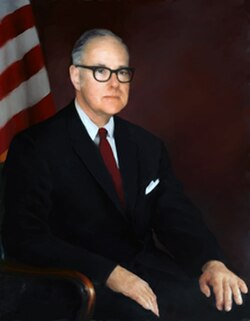

Richard M. Bissell Jr.
CIA official, 1909 to 1994

A CIA official who ran the U-2 spy-plane program from 1954 and, with CIA officer Herbert Miller, chose the remote Nevada site now known as Area 51 to test it; some called him the mayor of Area 51. He went on to oversee the A-12 Oxcart spy plane and the Corona spy-satellite program. 1
As the CIA's Deputy Director for Plans from 1959, he was a chief architect of the failed 1961 Bay of Pigs invasion, and he left the agency in February 1962. That July he joined the Institute for Defense Analyses, later becoming its president. 1
Harald Malmgren, who worked at IDA, said decades later that Bissell had informally briefed him on "otherworldly technologies," telling him the phenomenon was real and went back at least to the 1933 Magenta case. Bissell, who died in 1994, left no such account, and Malmgren's claims are unverified. 2,3
Open in the interactive Watcher
Related
- Area 51 Chose the Area 51 test site
- CIA CIA, 1954 to 1962
- IDA Joined IDA in 1962, later its president
- Magenta crash story
Sources
- Richard M. Bissell Jr. Wikipedia
- Malmgren on Bissell, alien tech and missile defense (transcript excerpt of the Jesse Michels interview, released April 22, 2025) Douglas Dean Johnson, 2025
- Harald Malmgren: real-world history vs. grandiose fantasy Douglas Dean Johnson, May 20, 2025